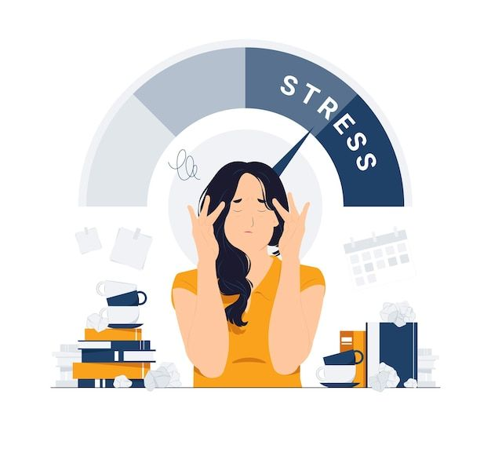

Stres Nedir?
Stres, aslında vücudumuzun karşılaştığı herhangi bir zorluğa veya değişime verdiği doğal bir tepkidir. Bu zorluklar veya değişimler fiziksel olabileceği gibi (örneğin, bir hastalık, yaralanma veya aşırı sıcak/soğuk hava), duygusal veya zihinsel de olabilir (örneğin, iş stresi, ilişki sorunları veya mali sıkıntılar). Stres anında vücudumuz, "savaş ya da kaç" tepkisi olarak bilinen bir dizi fizyolojik değişiklik yaşar. Bu tepki, bizi tehlikelerden korumak için evrimsel süreçte gelişmiştir.
Stres başladığında, sinir sistemimiz harekete geçer ve hormonlar salgılanır. Bu hormonların en önemlilerinden biri olan adrenalin, kalp atış hızını artırır, kan basıncını yükseltir ve kaslara daha fazla kan pompalanmasını sağlar. Bu sayede, tehlikeyle başa çıkmak veya kaçmak için gerekli enerji ve odaklanma sağlanır. Aynı zamanda, kortizol adı verilen başka bir stres hormonu da salgılanır. Kortizol, vücudun enerji depolarını harekete geçirir ve iltihaplanmayı baskılayarak stresle başa çıkmaya yardımcı olur.
Ancak, stresin sürekli veya uzun süreli olması durumunda, bu fizyolojik değişiklikler vücudumuz üzerinde yıpratıcı etkilere neden olabilir. Kronik stres, kalp hastalıkları, yüksek tansiyon, sindirim sorunları, bağışıklık sistemi zayıflaması, anksiyete ve depresyon gibi bir dizi sağlık sorununa yol açabilir. Bu nedenle, stresi yönetmek ve sağlıklı başa çıkma mekanizmaları geliştirmek, genel sağlığımız ve iyilik halimiz için hayati önem taşır.
Stresle Nasıl Başa Çıkılır ve Beslenme Düzenini Nasıl Etkiler?
Stresin yemek yeme düzeni üzerindeki etkileri oldukça çeşitlidir ve kişiden kişiye farklılık gösterebilir. Bazı insanlar stres altındayken iştahlarının arttığını ve daha fazla yemek yediklerini fark ederler. Bu durum, özellikle yüksek kalorili, şekerli ve yağlı gıdaların tüketiminde artışa neden olabilir. Bu tür gıdalar, kısa vadede kişiye bir "rahatlama" hissi verse de uzun vadede kilo alımına ve diğer sağlık sorunlarına yol açabilir.
Diğer yandan, bazı insanlar stres altındayken iştahlarının azaldığını ve daha az yemek yediklerini gözlemlerler. Bu durum, özellikle öğün atlamaya ve sağlıksız kilo kaybına neden olabilir. Vücudun ihtiyaç duyduğu temel besinleri alamaması, enerji seviyesinin düşmesine, halsizliğe ve bağışıklık sisteminin zayıflamasına yol açabilir.

| Aktivite | Önerilen Süre |
|---|---|
| Meditasyon | 10-20 dakika |
| Yürüyüş | 30 dakika |
| Hobi ile uğraşmak | Günde 1 saat |